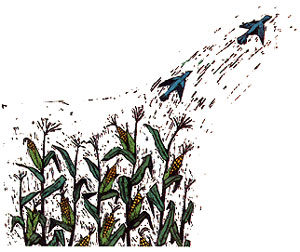
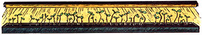
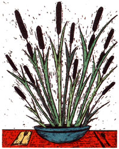

COUNTRY LORE
A hot tip for seed starting, and more.
For years I had problems with birds pulling up as much as 50% of my germinating sweet corn. A friend advised me to sprinkle lime on the row, and on either side too, just as the corn breaks through the soil. Since doing this I haven't lost a bit of corn.
-Tim Basinger
Campbellsburg, Indiana
The Choice of Experience
I start more than 500 seedlings in flats each spring, and over many years I've experimented with various bottom-heating methods to speed the sprouting process and promote deep root growth. My time-saving favorite is a large electric food-warming tray (they're fairly common at garage sales and secondhand stores). With the tray's heat control at the lowest setting, an entire flat can be sprouted in 48 to 72 hours. Plastic wrap placed loosely over the top retains moisture. As each flat of seedlings sprouts, I set it under fluorescent lights in our cool basement and keep it moistened with rainwater collected throughout the summer and stored in gallon plastic jugs.
-Barbara A. Sabatos
Howell, Michigan
A Blend of Friends
Good cooks know that basil and tomatoes make for a tasty combination, but I carry this a step further. Once my tomato plants get a good start in the garden, I grow basil at the base of each one. Not only do I have dried basil for seasoning, but my tomatoes seem to have an especially delicious flavor.
-Bette Caldwell
Stronghurst, Illinois
Vinyl Verifiers
I make plant and row markers by cutting strips from scrap vinyl siding. The vinyl can be easily cut with tin snips or a knife, is virtually indestructible, and can be labeled with a pencil (which is erasable) or waterproof ink (which can be washed off with ammonia). A siding contractor would probably give you all the material you'd need to make as many markers as you wish.
- Grant Kothiringer
Seneca, South Carolina
Plentiful Peas
I've got a trick that keeps moles from ruining my rows of peas. When I'm ready to plant the seeds, I shake them in a can into which I've poured about a teaspoonful of kerosene. By also planting early to harvest before summer, I've always had a good crop.
-Thelma A. Graham
Decatur, Michigan
Get Ready, Get Net, Go
As a children's dance teacher, I've spent many an hour constructing costumes of nylon net. But even if I didn't have all those scraps to use up, I find the material so handy I'd buy it anyway. Here are four ways nylon net helps me garden.
1. A handful of net makes a sturdy scrubber to clean flowerpots and gardening tools.
2. To start seeds I use plastic foam cups with drainage holes punched in the bottom. Before filling the cups with potting soil, I line each one with a 10-inch square of net. When transplanting, the whole bundle is easily lifted out of the cup and into the ground, with no shock to the roots. They also have no difficulty growing through the holes in the net, and the screen seems to protect the plants from cutworms.
3. I tuck a small piece of net into the opening at the top of each hot cap. It keeps insects out while allowing the air to circulate.
4. My husband built a series of cubes ranging in size from 12 inches square to 40 inches. The cubes are actually box-shaped frames made of one-inch lumber strips. To each of these I stapled netting to cover five sides; white net for sun-loving plants and green to provide shade. Placed over cole crops, the cubes let in air and water but really frustrate cabbage moths.
-Ronna M. Kelly
Palo Alto, California
Pass the Seeds, Please
I use an old saltshaker to spread tiny seeds that are difficult to distribute by hand.
-Dennis R. Willie
Folsom, Louisiana
Succulence From the Swamp
If you have access to wetlands or a swampy area, go there in the early spring to look for cattails. Cut off some of the new shoots that are only one to three inches long. Clean them till nothing but the solid ivory part remains. Then cut them into small pieces and add a bit of salt and your favorite salad dressing. My father told me about this unusual salad, and I'll bet once you've savored its fine, clean taste, you'll want to go back to gather more cattails.
-Fred A. Race
Euclid, Ohio
Broadloom Mulch
Carpeting is very effective for preventing weeds in the garden. Old, used pieces can be found for free or purchased for next to nothing. I look for carpet made of natural fibers, then cut it into strips to run between rows and into smaller pieces to position between plants. These can be used for many years, don't blow away (like newspaper does) and allow the rain to soak through. You can place carpet over compost, if you wish, and over drip irrigation systems, too. And it's great for those soggy spots where you'd otherwise sink ankle-deep in mud.
-C athryn Marshall
Atlin, British Columbia
No Strings Attached
Last spring, my neighbor (originally from Vietnam) watched as I struggled to set up a string trellis for my peas. Then he went over to a nearby pile of tree and bush trimmings and came back with several branches, which he stuck firmly in the ground next to the peas. My problems were over. The peas climbed the thin limbs and thrived, and I was happy to find a use for something I would have burned or thrown out. This spring I plan to use branches to support all my vining plants and my tomatoes as well.
-Todd Drake
Greensboro, North Carolina
Waste Not, Want Not
I've found a way to recycle all those plastic bags that manure, peat and other soil amendments come in. I cut the bags crosswise into one-inch strips and use these for tying up tomatoes and other plants that need support.
-Clarence Hoffman
Nestor, California
Through the years we've all discovered a few practical, time-tested solutions to the frustrating little problems of everyday life. Send your own suggestions to Country Lore, Mother Earth News, P.O. Box 70, Hendersonville, NC 28793. A one year subscription-or extension of an existing subscription-will be sent to each contributor whose tip is printed.
|
 |
 |
 |